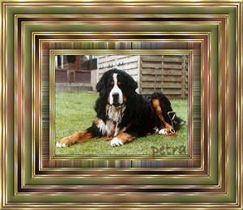

|
Wij hebben heel veel steun gekregen van mensen
uit onze omgeving. Ook mensen van het seniorennet hebben gereageerd en vrienden
van de psp club waarbij ik aangesloten ben.
We krijgen onze Xasha niet meer terug, maar het steekt wel een
riem onder ons hart.
Bedankt allemaal voor de leuke, begripvolle en steunende reacties.
Ik doe er
een greep uit
Van mijn zus, Hilde
Oh, wat jammer.
Lieve Xasha,
Wij willen je van hier laten weten,
Dat wij jou nooit zullen vergeten.
De tranen om jou heengaan,
Hoeven niet lang te bestaan.
Omdat God je een plaats in de hondenhemel geeft,
Weten wij dat je gelukkig en zonder pijn verder leeft.
Ooit zullen wij weer bij jou zijn,
Daarom doet het voor ons nu minder pijn.
Rust zacht kleine, grote vriend,
Want jij hebt de honden hemel echt verdiend.
Bedankt voor je liefde,
Bedankt voor je trouw,
Bedankt voor je gezelschap,
Bedankt voor je troost,
Bedankt voor je bestaan.
Heel veel sterkte.
Kusjes, Hilde
Van Monique en Lucien
Lieve Viv En JP,
Wat erg voor jullie, zo plots toch nog.....vind het zeer erg spijtig voor jullie
snik snik
Maar er is nog een kleine troost, ze heeft een prachtig leven gehad bij jullie,
als dit een troost mag zijn vrienden.
wou dat ik jullie kon troosten, jullie liefste kind.....heb er geen woorden
voor.
Hou jullie sterk, wij denken aan jullie lieve vrienden.
Van Anny
Lieve Viviane en paul
Mijn innige deelneming met jullie verlies, dat zo moeilijk te dragen is ,maar
het verdriet zal slijten ,maar de mooie herinnering zal je koesteren,diep in
jullie hart.
Sterkte en lieve groetjes
Van Sylvie
hallo,
Ja, wat moet ik zeggen! Ik kan jullie veel sterkte toe wensen en zeggen dat
jullie de mooie momenten met xasha moeten koesteren. Tot binnenkort!
Van Filip en Annick
innige deelneming en sterkte!!!
Nog eentje van Anny
Lieve Viviane
Ik heb hier een klein cadeautje om je een beetje te troosten
En weer een bewerking in Paint Shop Pro van Anny
Lieve viviane
Hier is het tweede,ik heb gisteren heel de dag aan jullie moeten denken.
Van Lisa en Joop
Lieverds,
Ik lees het nu pas sorry,Ik schrik me rot zeg. Hoe is het nu met je, zal wel
stil zijn he.
Ik wens jullie sterkte met het verlies.
Maar wat erg zeg, ik zit nu te janken,maar het is voor hem toch wel het beste,
al zie je het nog niet.
Lieverds veel sterkte he.
Liefs van Jopke en Muisje
Van Albert, mentor op het seniorennet van Paint Shop Pro
Beste vrienden JP en Viv,
enkele vrienden dierenliefhebbers hier in de groep hebben enkele groeten
gebracht tot afscheid Xasha.
Jullie kunnen dat bekijken op het niew blog dat is aangemaakt:
blog.seniorennet.be/afscheid
Ik hoop dat ik je daar een groot genoegen mee heb gedaan
met lieve groeten
En dit zijn de werken die de lieve senioren van het seniorennet
gemaakt hebben.
In
herinnering aan Xasha (van Diny)
Afscheid van Xasha (van Flicka)
Ik leef enorm met je mee Hedera, ook ik weet wat het is om een
geliefd dier te moeten afstaan.
Sterkte ermee. (van Aurora_Nanneke)
Voor het afscheid van Xasha, de lieve viervoeter van Hedera (van
Jasminka)
Voor het afscheid van Xasha de lieve viervoeter van Hedera (van
Albert)
Afscheid van Xasha een trouwe viervoeter van Viviane (van Jos)
Van Ciska
Hallo Viviane en Jean-Paul,
woorden kunnen hier niet veel doen, maar ik wil toch even laten weten dat ik bij
jullie en Xasha ben, al was het maar in gedachten. En zoals ik gisteren reeds
schreef, zolang men niet vergeten is, leeft men verder, al was het maar in de
gedachten en herinneringen van de mensen die van je gehouden hebben.
Het overlijden van Xasha zal bij jullie zeker een grote leegte nalaten, ik zie
evenwel nog een klein troostpuntje nl dat jullie thuis waren en hij niet alleen
is moeten gaan, dat zal hij zeker nog goed aangevoeld hebben.
Ik stuur jullie van hieruit een heel dikke pakkerd
Van Linda
Beste Viviane en Jean-Paul,
Ik heb jullie verhaal gelezen, met de tranen in mijn ogen. Kan me levendig
voorstellen wat jullie nu voelen. Over 2 jaar heb ik mijne scooby, (Maltezer)
moeten laten gaan.
Wij hebben ook geen kinderen, en ons hondje, ja je weet het wel.
Als je dit leest, weet je al dat je tijdens het werken je verdriet zeker niet
vergeet, en je thuisbent gekomen in een leeg huis.
Toen ik mijne scooby heb laten inslapen heb ik veel steun gekregen van de mensen
om me heen, en heb er veel over kunnen praten. Dit heeft me enorm geholpen, maar
de leegte bleef.
Ik wens je alvast veel sterkte in het verwerken van jullie verdriet.
Van Marie-Rose
Heel veel sterkte Vivane en Jean-Paul ,
met het heengaan van Xasha, elk droevig verhaal brengt ons weer zo dicht bij
onze herinneringen aan die moeilijk dagen die nu bij jullie aankomen. Wij leven
met jullie mee en voelen ook de pijn die dit verlies meebrengt. We sturen jullie
een hele dikke knuffel
liefs
Van Vosje
Hedera,
Mijn deelneming met het overlijden van jullie hond. Het is heel erg, maar hij
heeft zelf de beslissing genomen voor zover een dier dat kan, want de gang naar
de dierenarts voor euthanasie is ook heel zwaar. Ik ben er zelf ook nog niet van
bekomen,
Liefs
Van Bobane (Viviane)
Hedera,
ik begrijp heel goed de pijn bij het verlies van zo'n prachtdier.
Zelf hebben we 1 jullie onze hond moeten laten inslapen, hij was 16 jaar en op
geleefd,
hij stierf in mijn armen.
De stilte en het gemis is heel groot, sommigen begrijpen zoiets niet maar ik zeg
het
doet pijn, heel veel pijn!
Sterkte,
Viviane
Van Ada
Hallo Hedera
Ik weet dat het heel erg is om je dierbare viervoeter te moeten missen ... ik
kon niets maken....
maar veel mensen op seniorennet weten het wel
maar niet allemaal
Ik verloor nog geen vier jaar geleden mijn zoon net 33 jaar oud
zomaar in een nacht aan een hartstilstand
Nu ben ik gewoon bang dat ik geen troost woorden genoeg hebt
maar weet ik meen het met heel mijn hart
liefs Ada xx
Van Danielle
Oh hoe erg ik voel met je mee! Ik heb ook 2 honden (labrador en
hovawart) 11+12 jaar beiden ook in behandeling en gebruiken medicatie. Het zijn
onze 2 lievelingen ook, en ik kan me heel goed voorstellen hoe jij je voelt.
liefs danielle
van Booke
hedera, ik leef met je mee ook ik heb reeds tweemaal een hondje
verloren ,en weet dat het pijn doet, sterkte gewenst
booke
Van Tinaatje
Hello Viviane,
Daar ik nu pas mijn mailtjes inkeek stuur ik nu pas een briefje.
Bij het lezen van jouw mailtje begon mijn hart te bloeden. ik leef echt met
jullie mee want ook ik weet wat een verloren en verlaten gevoel je krijgt bij
het afstaan van je lieve huisdier. Het betert iets met de tijd maar gaat nooit
helemaal over. De tranen bollen mij nu terug over de wangen want bij het lezen
van jouw verhaal kwamen terug die herinneringen boven van mijn lieve hond welke
ik vorig jaar heb moeten afstaan. Mijn Thor...
Als je spreekt van die trouwe bruine ogen en voel ik terug de liefde die deze
konden uitstralen en je hart verwarmen. Maar...jullie moeten je sterk houden en
denk daarbij dat jullie je nooit iets hoeven te verwijten want ik weet zeker dat
Xasha een heel gelukkig en liefdevol leven heeft gekregen. Hij zal jullie eeuwig
dankbaar zijn en blijft voor altijd voortleven in jullie gedachten...
Als je er over wilt spreken en je hart luchten, dan hoef je mij maar te
mailen...ik heb een luisterend oor.
Nog veel sterkte en lieve groetjes van tinaatje
ps. ik heb nu nog mijn klein Rustyken...hij is al meer dan 8jaar en ik mag er
niet aan denken dat ik hem moet laten gaan...de rillingen kruipen over mijn rug.
De foto's kan je zien op mijn blog
http://blog.seniorennet.be/tinaatje
Van Albert
Viv en Jp, zo hebben wij Xasha leren kennen en waarderen en dit
op een gezamenlijke bijeenkomst in boom op een zonnige dag.
en zo zal hij in mijn en mijn vrouw in herinnering Blijven
Van Jan
Viviane jij veel sterkte toegewenst.
Wij hebben een golden retriever en die is ook al 14 jaar en ook aan het
sukkelen.
Groetjes Jan
Van Flicka
Lieve Hedera, ik leef echt met je mee, een dier waarvan je hield
afgeven doet pijn.
Een troost heb je en dat is dat hij niet lang heeft hoeven af te zien, dat is
het voorrecht van het dier zijn;
groetjes flicka
Van Diny
Hedera
Heel veel sterkte voor het gemis van Xasha, denk met liefde aan hem terug, wat
zul je hem missen............
Diny.
Nog eentje van Ada
Hedera hier zijn
geen woorden voor, en ik denk dat dit best hier zo mag
Ik wens je sterkte en moed... Ook een dier missen is heel erg .........
lieve groetjes Ada x
Van Martine
Beste Viviane en Paul,
ik wou dat ik iets anders kon schrijven maar de realiteit is pijnlijk voor
jullie beiden. Ik hoop dat je, zoals ik met Pinki die ook aan een hartstilstand
gestorven is nu 6 jaar geleden, dit verlies een plaats kunt geven in jullie
hart. Het komt toch nog onverwachts en eigenlijk afscheid nemen kan je toch
niet, die zucht hoorde ik ook, hij was komen afscheid nemen, maar op dat moment
besef je dat niet, hij was nog rond het bed gegaan naar Abike en dan die zucht,
aan de deur is hij gegaan.
Een mooie foto van hun beiden doet mij nog steeds teruggaan in de tijd, en dan
dikwijls met een traantje, maar dat mag toch hoor, we houden te veel van onze
dieren.
Een traan verlicht de pijn, dus waarom niet.
groetjes, Martine
Van Youran
Hedera,
Dit is zo erg voor jullie, als je geen kinderen hebt waarschijnlijk nog erger,
maar je kan je troosten, dat je zelf nu het initiatief niet hebt moeten nemen,
en dat hij toch tot zijn laatste zucht bij jullie is geweest, en zijn laatste
uren en dagen bij jullie heeft mogen doorbrengen. Mijn innigste deelneming voor
jullie beiden.
groetjes van Youran
Van Erica
Je enigste troost moet
zijn dat je er alles voor gedaan hebt wat kon,
tenminste voor mij was dat toch zo,ik heb mijn twee Berners verloren als ze nog
geen zes waren,het ras is blijkbaar niet zo sterk als het robuste uitzicht laat
vermoeden,maar in de omgang waren het pareltjes,nee vergeten ..... nooit.
groetjes en sterkte, erica
Van Irène
viviane en Jean-paul
veel sterkte in het verlies van je hond, we leven mee met jullie, we hebben er
ook al eentje moeten afgeven.
zoeteke
Van Viva
Lieve Hedera,
Ik maakte vorig jaar op 4 juli ongeveer hetzelfde mee met mijn Robintje. Wij
hebben ook geen kinderen en zij was elf jaar lang ons kindje. Het verdriet is
groot, de eerste weken zijn het ergst. Ik besloot gauw een ander hondje in huis
te nemen, dat doet niets af aan de eeuwige liefde die je voelt voor je overleden
dier. Elke dag denk ik nog vaak aan haar en kijk naar haar foto. Maar mijn Dréke
heeft wel de pijn weggenomen en nu blijft de zoete herinnering met wat weemoed.
Soms, in de nacht, laat ik nog een traan voor als mijn geliefde honden die ik in
mijn leven had. Dax, Snoepy, Robby en Robintje. Nu heb ik Dréke, hij is mijn
hartediefje, gisteren werd hij precies 500 dagen oud. De fotootjes staan op
mijn blogje
http://blog.seniorennet.be/viva/.
Ik wens je heel veel sterkte toe in deze moeilijke dagen.
Van Fien
Veel sterkte gewenst met
je verlies van xasha. Ik heb ook een Berner Sennen en hoop haar nog te houden.
Groetjes Fien
Van Marie-Rose
Heel veel sterkte viviane en Jean-Paul ,
met het heengaan van Xasha, elk droevig verhaal brengt ons weer zo dicht bij
onze herinneringen aan die moeilijk dagen die nu bij jullie aankomen.
wij leven met jullie mee en voelen ook de pijn die dit verlies meebrengt.
we sturen jullie een hele dikke knuffel
liefs Marie-Rose
Van Elisabeth
Innige deelneming voor uw xasha. Maar hij zal steeds bij je zijn
in het diepste van je hart.
Beautyfull Lady
Dikke knuffel
Van Viviane
Hedera,
ik begrijp heel goed de pijn bij het verlies van zo'n prachtdier.
Zelf hebben we 1 jullie onze hond moeten laten inslapen, hij was 16 jaar en op
geleefd,
hij stierf in mijn armen.
De stilte en het gemis is heel groot, sommigen begrijpen zoiets niet maar ik zeg
het
doet pijn, heel veel pijn!
Sterkte,
Viviane
Van Raymond en Simone
Hallo Viviane,
Zoals beloofd stuur ik je alle inzendingen van Xasha, die de afbeelding van
Xasha hebben gebruikt en de winnaar ervan is gekozen door Anny en die heeft ons Simonneke gekozen, met Xasha als hij klein was "een echt scheetje" zoals je me
al eens gezegd hebt in het Hollands.
vriendelijke groetjes
Ray en Simone
Dit zijn werkjes die op de club van Raymond verschenen zijn, naar
aanleiding van een lesje van Lisa - Frame Xasha
van Simone
van Raymond

van Petra
van Anny |